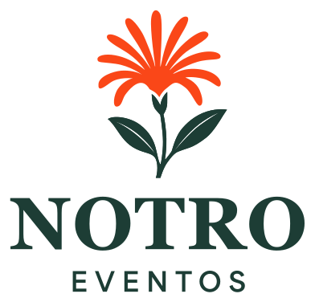
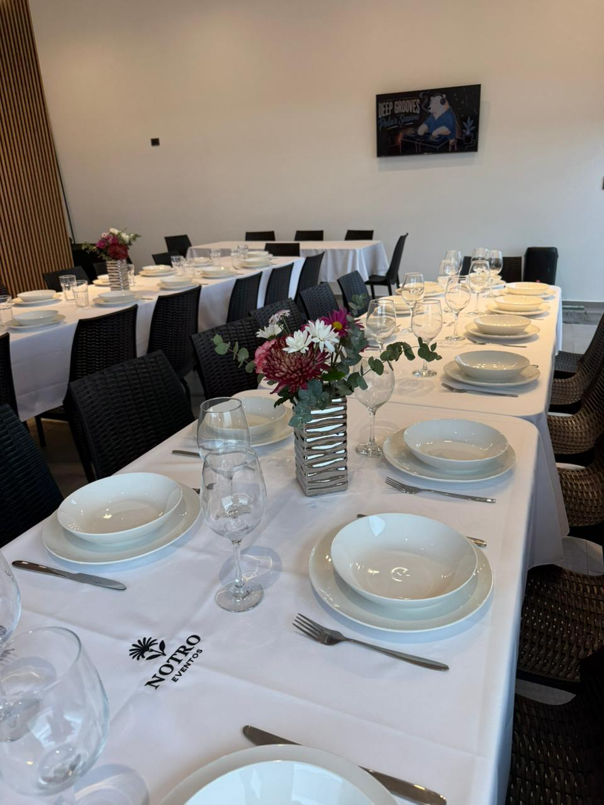
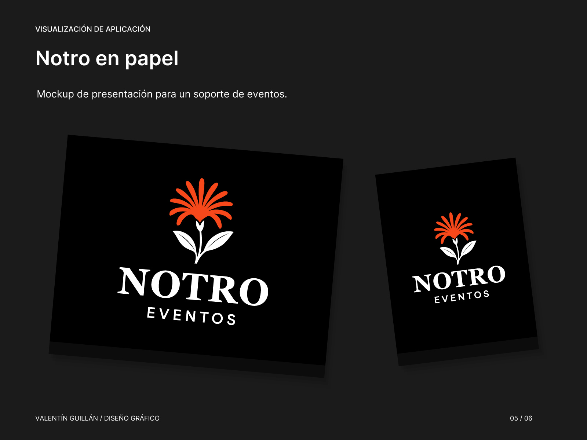

Todos los proyectos
Diseño de logo · Eventos
Notro Eventos
Una flor estilizada.
Una firma para Notro Eventos.

El proyecto
Diseño de logo
para Notro Eventos.
Un identificador que reúne un símbolo floral, la firma NOTRO en letras serif y el descriptor EVENTOS en una tipografía sans serif.
El caso reúne el identificador, sus versiones de archivo y una fotografía de su aplicación real en servilletas para eventos.
- Cliente
- Notro Eventos
- Participación
- Diseño de logo
- Diseño
- Valentín Guillán
Variantes del archivo
Otras versiones
del identificador.
Las versiones del archivo muestran la composición del logo sobre papel y verde oscuro.


Una aplicación real
El logo también
forma parte del evento.
La firma aparece impresa en una servilleta, junto a la vajilla y las copas de una mesa preparada por Notro.
La fotografía pertenece al archivo de Notro.

Visualización de aplicación: Notro en papel

Participación y créditos
Notro Eventos
- Diseño de logo
- Valentín Guillán
- Fotografía de la aplicación
- Archivo de Notro